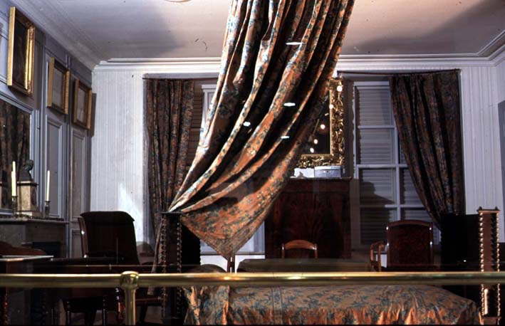

|
|  |
|
San Martín´s death chamber
|
In 1899, Carranza convinced San Martín's granddaughter, then living in France, to ship to Buenos Aires not only another series of paintings but the entire bedroom the ancient general had occupied in his exile at Boulogne-sur-Mer. The stage setting was completed the same year, thanks to the donation, by another famous exile –the ex-dictator Juan Manuel de Rosas's daughter Manuelita–, of the sabre which San Martín had once given to her (now also deceased) father in approval of his stern resistance against Anglo-French pressure for free navegation in the 1840s. As the human remains and worldly possessions of the founding fathers of all political creeds were returning to the country that had driven them into exile, the old, Creole Argentina was finally reconciling itself as sharing a family memory common to all (all those, in fact, who could boast two or more generations of patrician ancestors in the country).
|